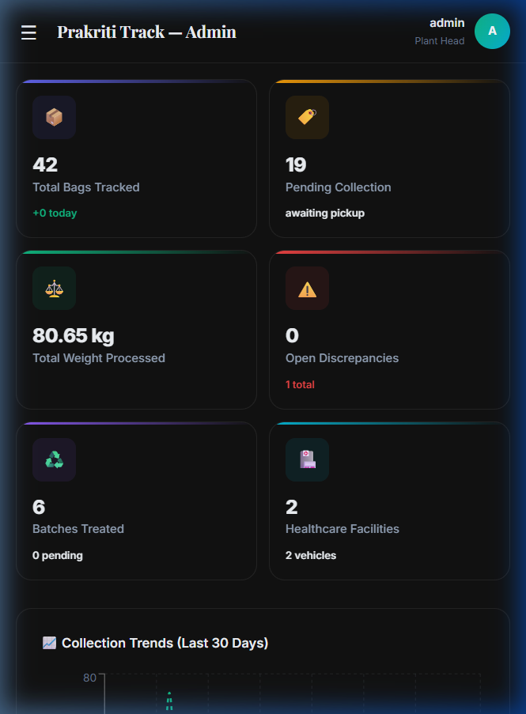
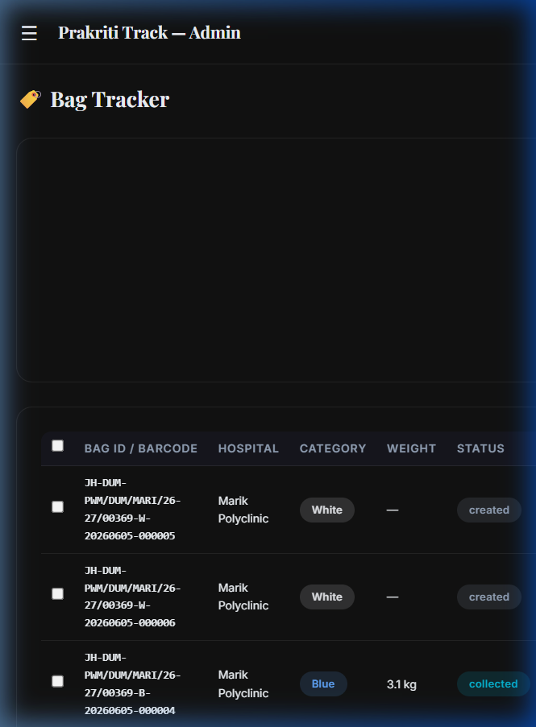
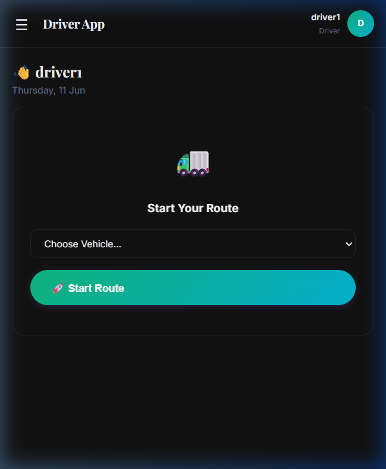
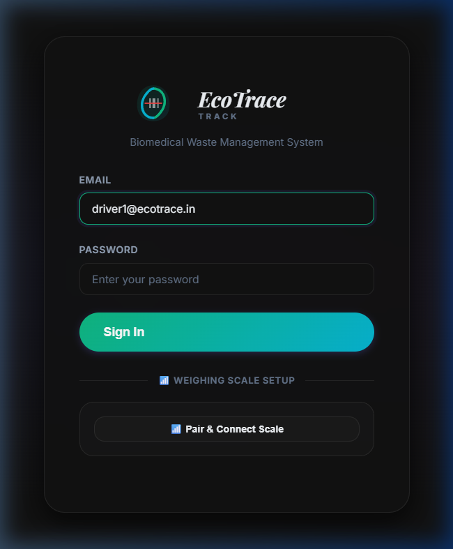
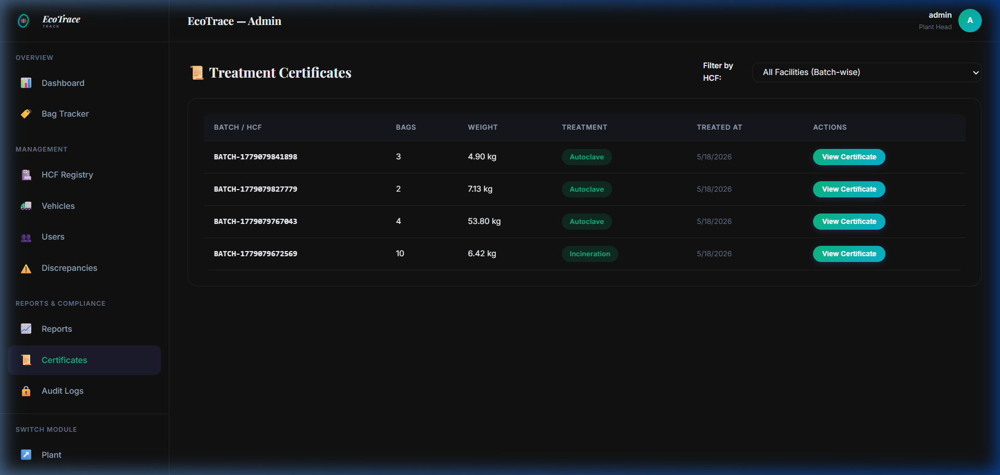
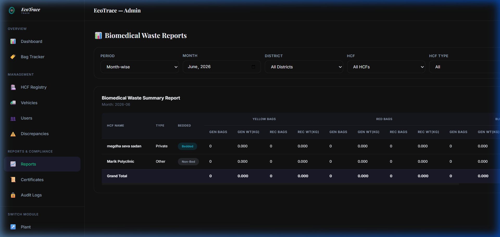
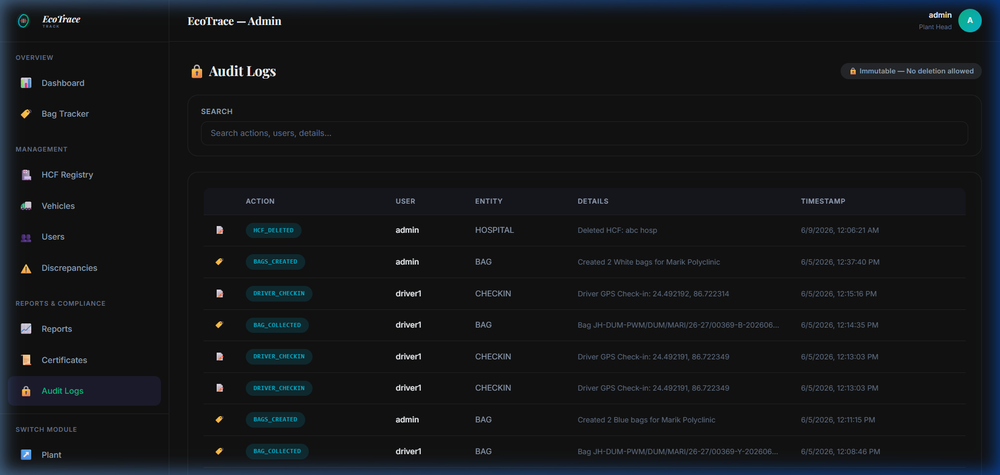

Automated barcode generation, integrated mobile weighing, and real-time digital auditing for modern healthcare facilities.
Traditional biomedical waste workflows suffer from high manual overhead, compliance risks, missing data, and critical auditing delays. EcoTrace provides a modern digital alternative.
EcoTrace enforces a strict **digital handshake** at every handover node. From the moment the healthcare facility labels a waste bag, through transit check-in, and final treatment processing, every action is timestamped, scanned, and verified. Discrepancies are flagged immediately, preventing environmental leaks and ensuring absolute regulatory alignment.
EcoTrace is structured into three dedicated modules, delivering targeted, high-performance interfaces for all stakeholders in the waste lifecycle.
Hospitals generate waste bags inside the portal, print dynamic color-coded QR labels (Yellow, Red, Blue, White), review dispatch manifests, and download official disposal certificates once processing completes.
A responsive web application enabling field collectors to perform GPS check-ins at facility nodes, scan QR labels with their phone cameras, record weights directly via Bluetooth scales, and sync queue data offline.
Plant managers log gate receipts, reconcile inbound shipments against driver route sheets, group bags into processing batches (Autoclave, Incinerate), and issue cryptographically backed disposal certificates.
The EcoTrace Admin Dashboard provides facility heads with an overview of active routes, critical compliance discrepancies, and historical waste volumes.
Key Features: Recharts integration for visual weight distribution trends, live route sync monitoring, and HCF registry maps.

Every waste bag generated by an HCF receives a unique tracking profile. Handover status update events (Created, Transit, Received, Treated) are recorded instantly.
Key Features: Unique barcode parsing, color-coded categorization filters, and batch creation reconciliation indicators.

Drivers handle collections via mobile check-ins and built-in camera scanning. Collected items are saved locally and synced automatically as connectivity changes.
Key Features: Offline sync queues, real-time online/offline banners, HTML5 QR camera decoding, and Bluetooth weight scale pairing.

To prevent clerical errors and compliance fraud, EcoTrace connects directly to digital weighing scales using Web Bluetooth APIs.
Key Features: Pair & Connect Scale widget, live weight streaming in kg, and automatic connection state persistence.

Once waste is processed at the treatment plant, EcoTrace generates a digital Disposal Certificate detailing total weight and category breakdown.
Key Features: PDF generation engine, searchable certificate archive table, and direct print functionality for SPCB audits.

Generate monthly waste output reports automatically. Visualize historical weight logs, hospital distributions, and segregation indexes.
Key Features: Interactive Recharts charts (area charts and bar charts), export to CSV/Excel capabilities, and monthly filter models.

To maintain trust and security, EcoTrace features database-level row audit triggers that record every single profile action.
Key Features: Immutable PostgreSQL log ledger (no edit or delete policies), username tracking, action detail logging, and date-time timestamps.

Leveraging modern architecture to ensure fast updates, military-grade data security, and seamless integration with existing IT infrastructure.
Developed using top-tier frameworks to offer smooth page loads and zero downtime.
Deploy EcoTrace within your facility network to eliminate waste discrepancy leaks, digitize logs, and automate regulatory reports.
Request a Demo